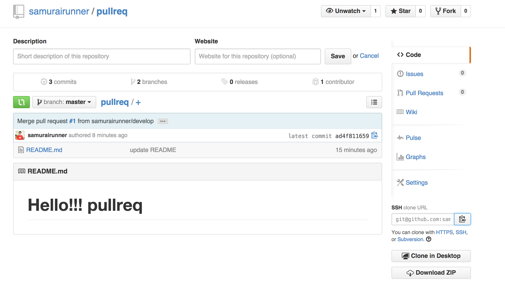
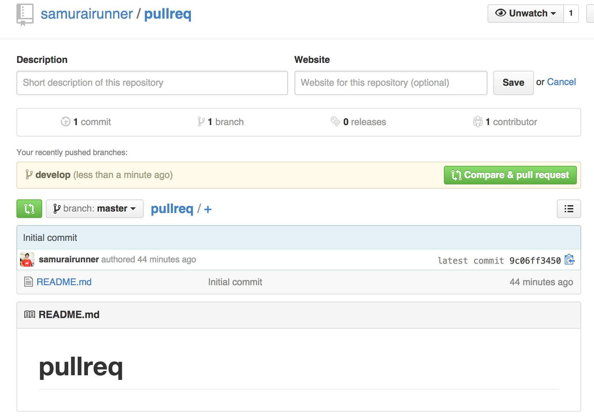
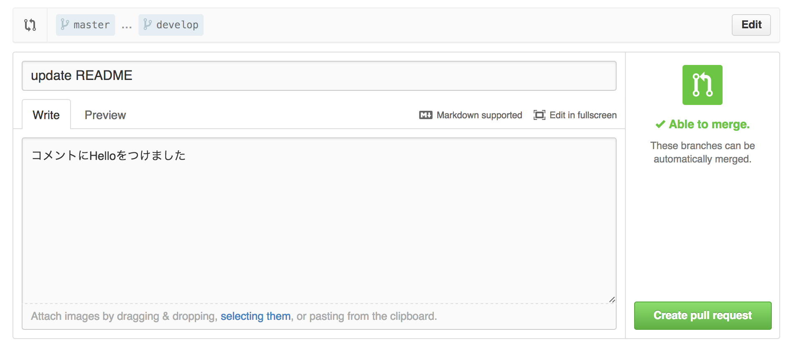

GitHubの使用方法

pull requestについて
リポジトリを作成または、cloneする。
Github上のレポジトリからローカルにclone(保存)する。
① GithubのPullRequestをしたいページに移動する。
② clone URLをコピーする

③ ターミナルからcloneを実行する
git clone {コピーしたURL}
Pull Request用のBranchを作成する
①cloneしたディレクトリに移動する
cd pullreq
②developという名前のBranchを作成する
git checkout -b develop
Cloneしたディレクトリを編集する
① 現在のフォルダをFinderで表示
open .
②ファイルの編集
略
ローカルでadd⇒commit、Githubへpushする
①編集ファイルをステージングに移す
git add .
②編集ファイルをcommitする
git commit -m "update README"
③developブランチからGithub上のoriginブランチにpushする
git push origin develop
Github上でPullRequestする
①右上の緑色のCompare & pull requestボタンをクリック

②どういった変更を加えたのかを説明する内容を記入

③どのブランチからどのブランチにpull requestするかを確認する
※developブランチからmasterブランチへのpull request
④「Create pull request」ボタンを押して、Pull Requestを作成
Github上でMergeする
※この作業は、本来、自分以外のレポジトリ管理者がコードを確認して実行される
①左下の緑色の[Merge pull request]ボタンを押して、Mergeを実行する
以上